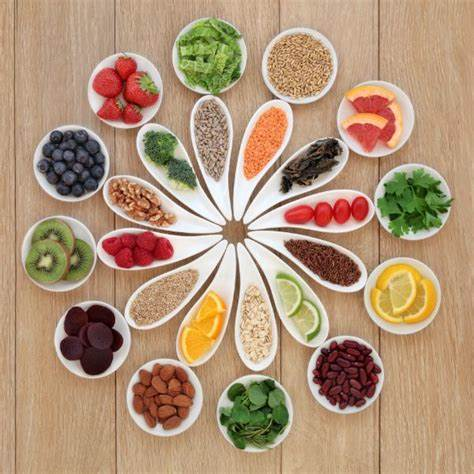

Consejos saludables:
Mantén una dieta equilibrada con alimentos naturales.
Haz ejercicio regularmente, al menos 150 minutos por semana.
Duerme entre 7 y 9 horas cada noche.
Gestiona el estrés con técnicas como la meditación.

Cultiva relaciones sociales saludables.
Evita el tabaco y el consumo excesivo de alcohol.
Realiza chequeos médicos regulares.
Cuida tu salud mental y busca ayuda si es necesario.